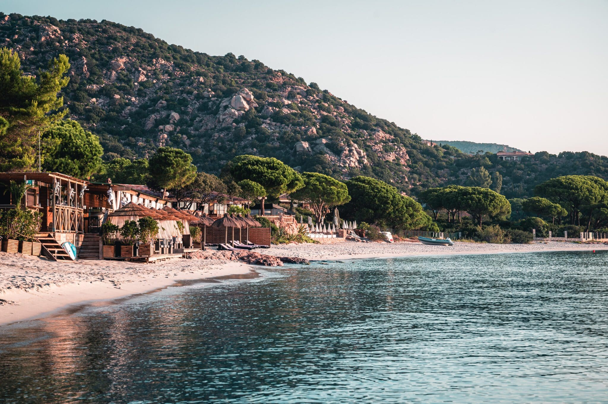

Porto-Vecchio
Porto-Vecchio, une jolie ville portuaire située dans le sud de la Corse, est réputée pour ses plages de sable fin, sa vie nocturne animée et son riche patrimoine viticole. La région environnante produit des vins de qualité, dont les vins d'appellation d'origine contrôlée (AOC) "Vin de Corse-Porto-Vecchio". Visitez les vignobles locaux pour déguster ces délicieux crus et admirer les paysages vallonnés qui les entourent.
